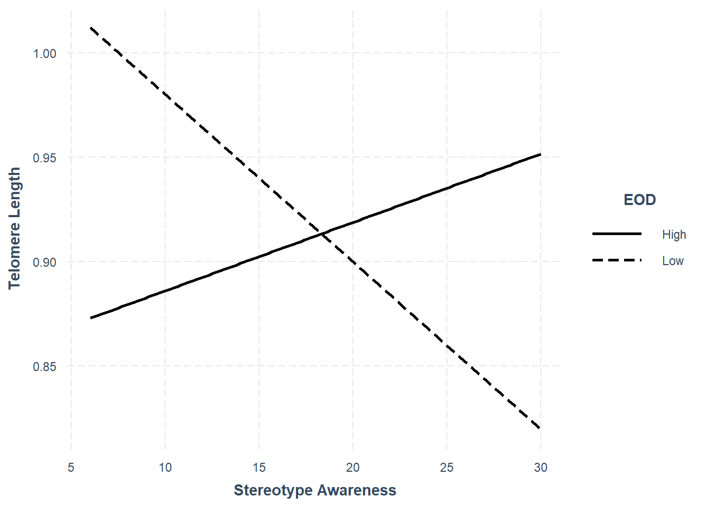

| row | column | cor | p |
|---|---|---|---|
| AL_75_mix | tlr | 0.20 | 0.03 |
| AL_75_mix | art_SA | 0.00 | 0.98 |
| AL_75_mix | art_CC | -0.05 | 0.55 |
| AL_75_mix | art_RRW | 0.02 | 0.80 |
| AL_75_mix | eod_sum | -0.02 | 0.83 |
| AL_75_mix | age_yrs | 0.29 | 0.00 |
| AL_75_mix | educ_dichot | 0.25 | 0.00 |
| AL_75_mix | mibi_PR | 0.02 | 0.77 |
| art_CC | art_RRW | 0.20 | 0.00 |
| art_CC | eod_sum | 0.36 | 0.00 |
| art_CC | age_yrs | 0.02 | 0.78 |
| art_CC | educ_dichot | 0.13 | 0.06 |
| art_CC | mibi_PR | -0.09 | 0.20 |
| art_RRW | eod_sum | 0.34 | 0.00 |
| art_RRW | age_yrs | -0.01 | 0.89 |
| art_RRW | educ_dichot | -0.06 | 0.36 |
| art_RRW | mibi_PR | -0.43 | 0.00 |
| art_SA | art_CC | 0.09 | 0.18 |
| art_SA | art_RRW | 0.22 | 0.00 |
| art_SA | eod_sum | 0.22 | 0.00 |
| art_SA | age_yrs | -0.10 | 0.16 |
| art_SA | educ_dichot | -0.13 | 0.06 |
| art_SA | mibi_PR | -0.37 | 0.00 |
| tlr | art_SA | 0.07 | 0.44 |
| tlr | art_CC | 0.05 | 0.59 |
| tlr | art_RRW | 0.03 | 0.70 |
| tlr | eod_sum | 0.06 | 0.51 |
| tlr | age_yrs | 0.09 | 0.26 |
| tlr | educ_dichot | 0.01 | 0.95 |
| tlr | mibi_PR | -0.26 | 0.00 |
aRT & Weathering - 2023
Data Information
Outcomes: Allostatic Load, named AL_75_mix and is a function of:
- IL6 (75th percentile),
- epinephrine (75th percentile),
- norepinephrine (75th perc.),
- cortisol (75th perc.),
- hsCRP (JNC7),
- diastolic blood pressure (JNC7),
- systolic blood pressure (JNC7),
- HDL (ATPIII),
- LDL (ATPIII),
- waist (ATPIII),
- glucose (Expert Committee on Diagnosis and Classification of Diabetes Mellitus),
- HBA1C (Expert Committee on Diagnosis and Classification of Diabetes Mellitus),
- cholesterol (ATPIII)
- triglycerides (ATPIII)
- BMI (standards)
Telomere length (n = 140) named tlr. Has been completely merged with data
Predictor: Anticipatory Racism Threat aRT
Reliability of the subscales:
- art_resilience: alpha = 0.66 (0.59, 0.74)
- art_confirmation_concern: alpha = 0.94 (0.93, 0.95)
- art_stereotype_awareness: alpha = 0.86 (0.83, 0.89)
Correlations
Path Analysis: Allostatic Load
Running both linear and quadratic terms.
lavaan.mi object based on 20 imputed data sets.
See class?lavaan.mi help page for available methods.
Convergence information:
The model converged on 20 imputed data sets
Rubin's (1987) rules were used to pool point and SE estimates across 20 imputed data sets, and to calculate degrees of freedom for each parameter's t test and CI.| Predictor | b | SE | CI | p |
|---|---|---|---|---|
| eod_sum | 0.000 | 0.022 | [ -0.042 - 0.042 ] | 1.000 |
| eod_sum2 | -0.001 | 0.002 | [ -0.006 - 0.003 ] | 0.528 |
| rrw | -0.023 | 0.194 | [ -0.403 - 0.358 ] | 0.907 |
| sa | 0.357 | 0.128 | [ 0.107 - 0.607 ] | 0.005 |
| cc | -0.278 | 0.148 | [ -0.567 - 0.012 ] | 0.060 |
| int_rrw2 | 0.002 | 0.002 | [ -0.002 - 0.005 ] | 0.312 |
| int_sa2 | -0.003 | 0.001 | [ -0.005 - -0.001 ] | 0.009 |
| int_cc2 | 0.001 | 0.001 | [ -0.001 - 0.004 ] | 0.376 |
| int_rrw | -0.042 | 0.027 | [ -0.095 - 0.01 ] | 0.112 |
| int_sa | 0.014 | 0.016 | [ -0.018 - 0.046 ] | 0.395 |
| int_cc | 0.005 | 0.018 | [ -0.029 - 0.04 ] | 0.763 |
| cvmeds_current | 0.872 | 0.387 | [ 0.112 - 1.631 ] | 0.024 |
| diabetesmedtx_current | 1.911 | 0.731 | [ 0.478 - 3.344 ] | 0.009 |
| educ_dichot | 1.278 | 0.346 | [ 0.601 - 1.955 ] | 0.000 |
| age_yrs | 0.059 | 0.027 | [ 0.007 - 0.111 ] | 0.026 |
| mibi_pr_avg_c | -0.008 | 0.168 | [ -0.338 - 0.321 ] | 0.960 |
Summary
- Significant main effect of stereotype awareness
- Significant interaction of stereotype awareness and eod (eod as quadratic)
- Significant interaction of rrw and eod (eod as linear)
Quadratic relationship comes out for AL.
Graphs
AL: Quadratic Intx SA x EOD
AL: Intx RRW x EOD LINEAR
Path Analysis: Telomere Length
Running both linear and quadratic terms (per the previous paper)
lavaan.mi object based on 20 imputed data sets.
See class?lavaan.mi help page for available methods.
Convergence information:
The model converged on 20 imputed data sets
Rubin's (1987) rules were used to pool point and SE estimates across 20 imputed data sets, and to calculate degrees of freedom for each parameter's t test and CI.| Predictor | b | SE | CI | p |
|---|---|---|---|---|
| eod_sum2 | 0.000 | 0.000 | [ -0.001 - 0.001 ] | 0.596 |
| eod_sum | 0.004 | 0.004 | [ -0.004 - 0.012 ] | 0.300 |
| rrw | -0.088 | 0.035 | [ -0.157 - -0.019 ] | 0.013 |
| sa | 0.010 | 0.021 | [ -0.032 - 0.052 ] | 0.645 |
| cc | 0.009 | 0.027 | [ -0.044 - 0.061 ] | 0.751 |
| int_rrw | -0.008 | 0.005 | [ -0.018 - 0.001 ] | 0.086 |
| int_sa | 0.007 | 0.003 | [ 0.002 - 0.013 ] | 0.008 |
| int_cc | 0.001 | 0.003 | [ -0.005 - 0.008 ] | 0.706 |
| int_rrw2 | 0.000 | 0.000 | [ 0 - 0.001 ] | 0.319 |
| int_sa2 | 0.000 | 0.000 | [ 0 - 0 ] | 0.565 |
| int_cc2 | 0.000 | 0.000 | [ -0.001 - 0 ] | 0.334 |
| cvmeds_current | 0.061 | 0.071 | [ -0.078 - 0.2 ] | 0.393 |
| diabetesmedtx_current | 0.208 | 0.133 | [ -0.052 - 0.468 ] | 0.117 |
| educ_dichot | 0.088 | 0.057 | [ -0.025 - 0.2 ] | 0.127 |
| age_yrs | 0.002 | 0.005 | [ -0.008 - 0.011 ] | 0.748 |
| mibi_pr_avg_c | -0.105 | 0.030 | [ -0.165 - -0.046 ] | 0.001 |
Summary
- Significant main effect of rrw
- Significant interaction of stereotype awareness and eod (eod as linear)
- Significant interaction of rrw and eod (eod as linear)
Linear Relationship comes up for Telomere length.
Graphs
rTL: Intx RRW x EOD LINEAR
rTL: Intx SA x EOD LINEAR
